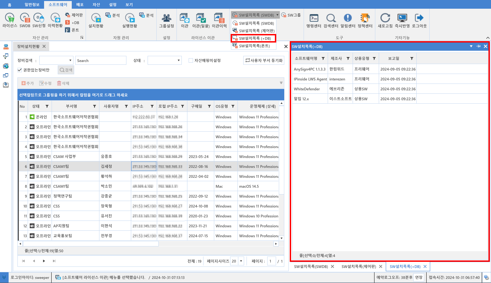

5-4-3. SW설치목록(+DB)
5-4-3. SW설치목록(+DB)
Source: https://www.sweeper.or.kr/etc/manual/5-4-3SWDB.html
5-4-3. SW설치목록(+DB)


+DB를 기준으로 소프트웨어 목록을 보여줍니다.
- SW설치목록(+DB) : 선택한 장비에 설치된 소프트웨어 중에서 +DB를 기준으로 검출된 소프트웨어 목록을 보여줍니다.

© Copyright SWeeper Inc.. All Rights Reserved